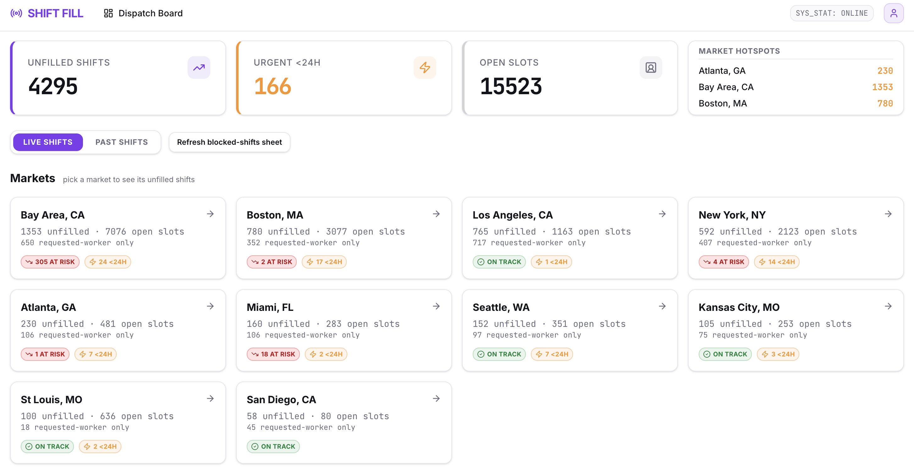
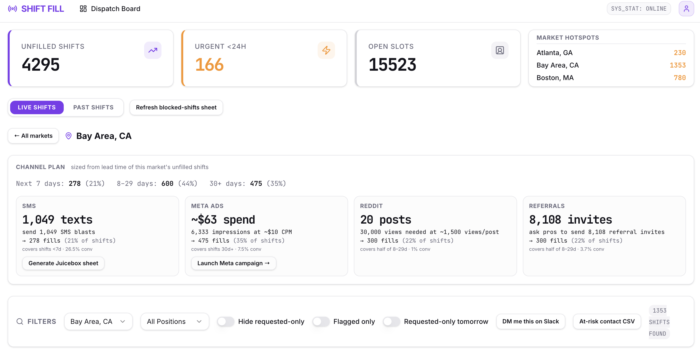
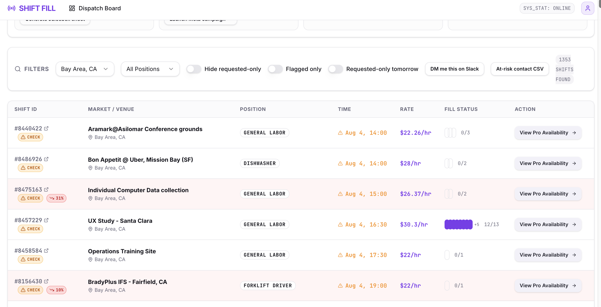
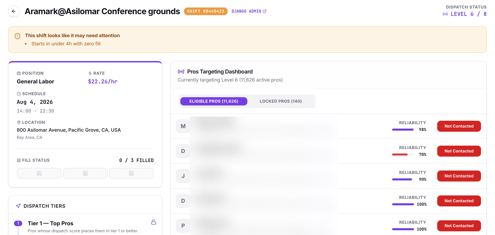

In
p = aria.projects.loc["ad_engine"] p.info()
Out
<class 'aria.Project'>
- role
- Product Operations Intern
- timeline
- Jun 2026 – Aug 2026
- stack
- Python, SQL, generative AI APIs
- status
- In production
Internship project · Instawork
Developed an outreach engine that identifies supply gaps and uses agentic workflows to tap into existing supply and grow supply.
p = aria.projects.loc["ad_engine"] p.info()
Instawork matches hourly professionals to shifts, and the shifts that don't fill are the whole problem. On an ordinary day that's 4,295 unfilled shifts spread across ten markets, far past what anyone can triage by reading a list. Some of them are genuinely urgent and some only look it, and the ones that matter are buried.
The harder part is that the right response is different for each one. A shift starting in four hours needs a text to somebody already nearby and already qualified. A shift thirty days out is an acquisition problem: you have time to run ads and wait for them to convert. Treating those the same wastes either the spend or the shift, and the tooling didn't distinguish them.
A dispatch board that pulls every unfilled shift across markets, ranks them by fill risk, and then, the part I care about, sizes an outreach plan against the lead time of what's actually open in that market, rather than applying one playbook everywhere.
The risk scoring underneath it is a simple neural network I trained to classify whether a given shift is likely to fill or go unfilled. That is what puts a percentage on a row and decides which shifts are worth intervening on at all, so the board leads with the bookings actually in trouble rather than the ones that merely look urgent.
Ordering the pros for a given shift is deliberately not a model. It ranks on what already predicts turnout well: how many past gigs a pro has worked and their reliability rating. That keeps the targeting explainable, which matters when someone has to justify why one pro got contacted first.
p.show("instawork-1-dispatch-board.png")

Drilling into a market splits its unfilled shifts into lead-time buckets (next 7 days, 8–29 days, 30+ days) and gives each bucket to the channel that can actually reach it in time. Every channel is sized against its own conversion rate, so the plan comes out in the units you'd actually act on: texts to send, dollars to spend, posts to write, invites to ask for.
Those actions run the campaign rather than handing you a brief. The Meta panel builds and launches the campaign itself, sized to that market's budget and audience, so nobody opens Ads Manager to translate a recommendation into a live ad. The SMS panel generates the send-ready Juicebox sheet the same way.
Reddit works differently, and it's the piece I find most interesting. Agents write and post to the communities where hourly workers actually spend time, and those posts promote Instawork itself rather than any individual shift. Filling one booking helps one client; bringing new pros onto the platform deepens the pool every market pulls from. So the board does both at once: it closes the specific gaps in front of you, and it keeps growing the supply those gaps get filled from.
p.show("instawork-2-channel-plan.png")

Below the plan sits the shift level, where the work is triage rather than strategy: filters for position and market, toggles for the requested-worker-only shifts that outreach can't help, and exports that hand off to wherever the follow-up actually happens: an at-risk contact CSV, or the list DM'd to you on Slack.
p.show("instawork-3-shift-table.png")

Opening a single shift shows who outreach should reach and in what order. Instawork dispatches in tiers, releasing a shift to progressively wider pools of pros, so the targeting view makes the current level explicit, showing how many pros are eligible right now, how many are still locked, and how reliable each one is, alongside whether anyone has actually contacted them yet.
p.show("instawork-4-pro-targeting.png")

The board is being deployed at Instawork, where account managers use it to see the unfilled shifts across the accounts they manage and to automate filling the ones the model flags as likely to go unfilled. That is the shift in how the work gets done: instead of an account manager scanning a list and guessing which bookings need attention, the ranking surfaces them and the outreach runs itself.
The change that mattered wasn't visibility, since the unfilled shifts were always countable. It was that the board turns a count into a decision. Lead time became the thing that picks the channel, which means the near-term shifts get the intervention that can still reach them and the far-out ones get spend that has time to convert.
aria.projects.next()